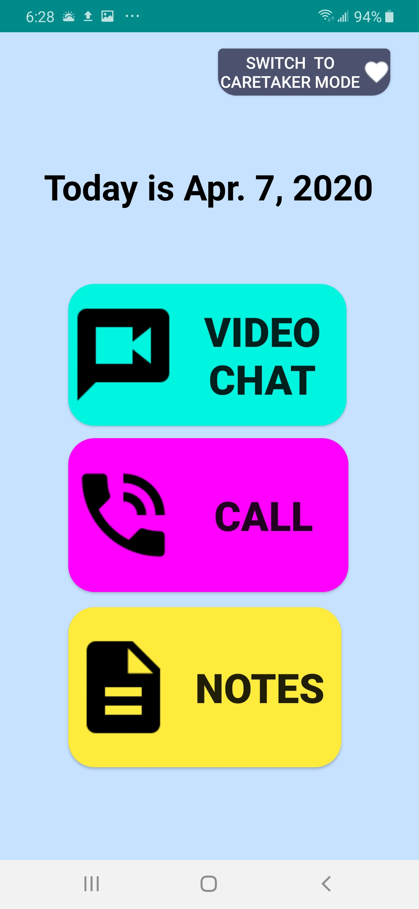
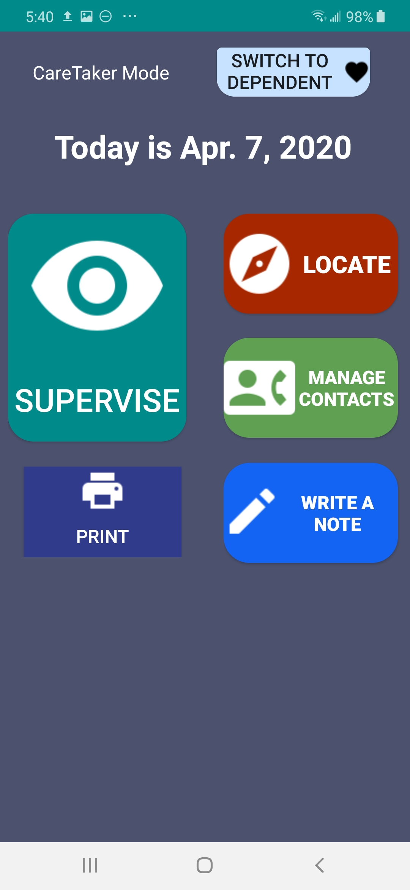
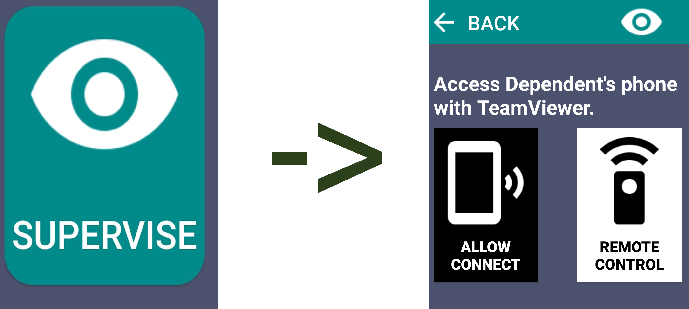
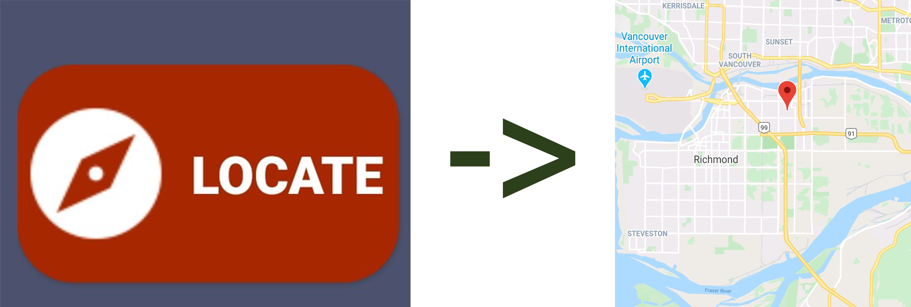
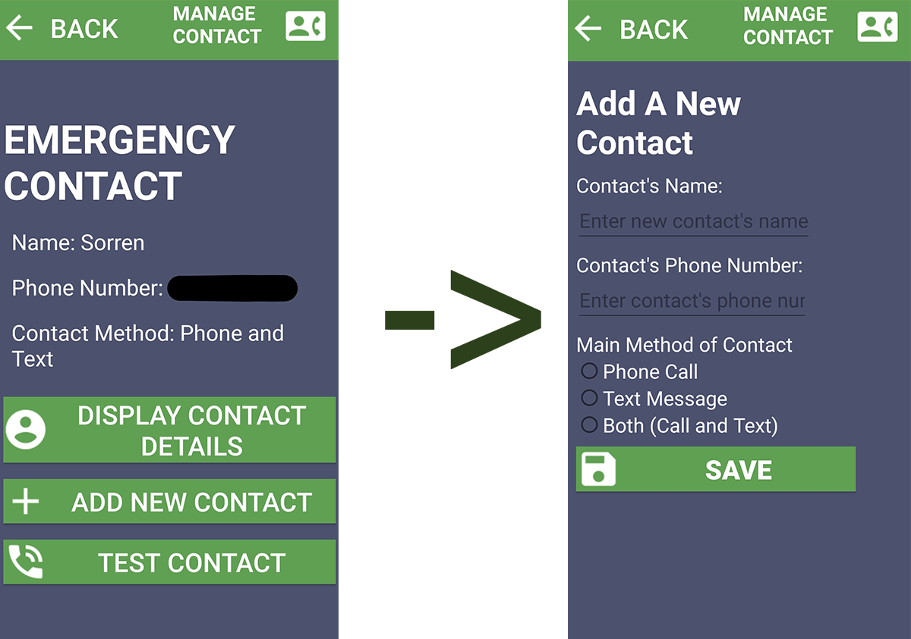
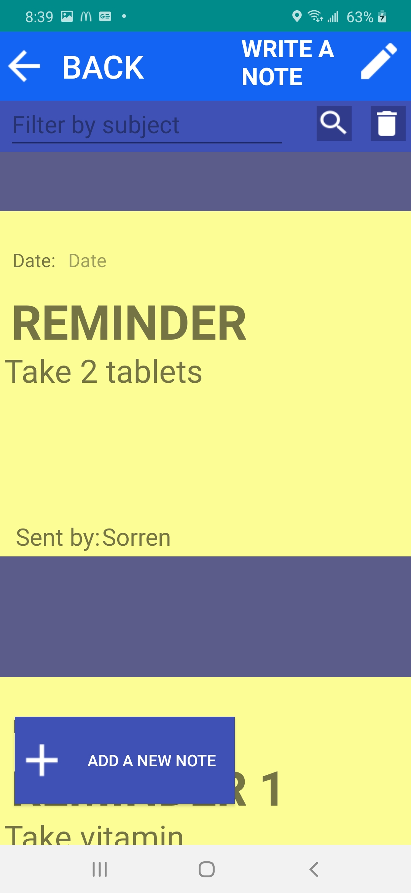
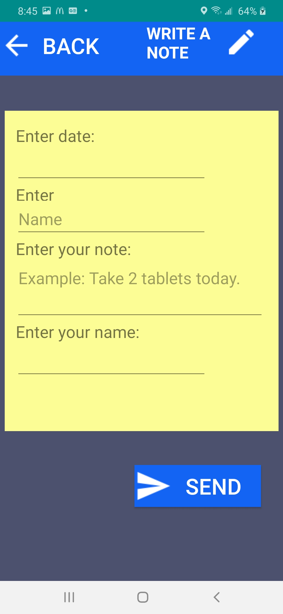
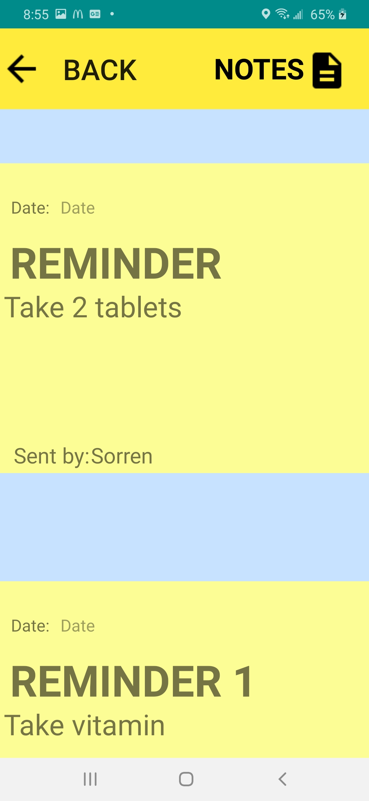
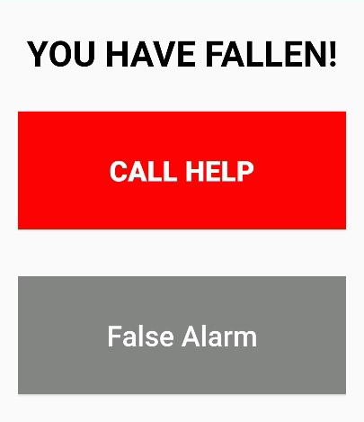

SeniorView is designed to supervise elders or loved ones at home. Developed using Android Studios (Java, XML, SQLite), It alerts caretakers if a loved one needs help or assistance. SeniorView acts as a personal digital assistant for seniors. My application monitors the senior’s activity when they are alone. This allows the caretaker to be informed and can write digital notes. Such as a reminder to take a pill at a certain time.
I wanted to develop an app that served a greater purpose for humanity. I thought about my grandmother and it was at that moment an idea came to mind for my app.
Abstact
My Grandmother has been one of my caretakers ever since I was born. After many years, her age made her more susceptible to illness. She contracted dementia a mental illness that affects memory loss, and hallucinations. Because of her condition, the roles had been switched. I have become her caretaker. My Grandmother needs constant supervision and this can be a difficult task. With the combination of school, work, and social life it can be very difficult to watch over her when she is alone at home. Medical alert systems can help keep the caretaker alerted if something happens at home. However, these systems can come with a price and may not be available. As you know, phones now have many functionalities not limited to just calling another person. Phones are almost always carried and used by people whenever they go to work, school, or even staying at home. A few of the many functionalities of a modern phone include sensors, GPS, camera, etc. Utilizing the phone’s capabilities, we can combine the functions and create a helpful app to aid our dependent.
Design Process
It was concerning after witnessing my grandmother fall several times. This is especially worrisome if this was to happen if she was alone at home. This is how my idea came to fruition. The idea was to design an alert system that can be easily accessed via phone. Also, it would allow my grandmother to contact us through video chat if we were away from home. A possible constraint to this was that it may be difficult for a senior to navigate a modern phone. To solve this, the UI must be simple to navigate, easy on the eyes, and distinguishable.
Preliminary programs were written to test the app functionalities individually. Barebones applications were developed before developing the full app. One of them included a class for accessing a plant SQLite database to filter through queried plant names and species. The basic logic for storing, retrieving, and searching was implemented for the Note function. Keeping the development process modular was key to testing and experimenting.
Functionalities
My app, SeniorView allows a caretaker to supervise their dependent without the need to be around. When a caretaker is away from the senior, SeniorView introduces a variety of options for them to check on them via by phone. One of the main functions is Supervise. Supervise allows the caretaker to access the dependent’s phone remotely with their own phone, powered by TeamViewer. Furthermore, the caretaker would then have complete access to their phone, accessing their camera and other apps. The Supervise function is a direct approach for monitoring the dependent. I will discuss SeniorView’s other functions along with the Supervisor function in more details below. Another main function for my app is the respective modes for dependent users and the caretaker user. These modes have different functions from each other. The purpose for these different modes is to have a simple UI for the dependent while the caretaker can navigate through a more complex UI to manage the activities for the dependent.
 Two different modes: Dependent Mode & CareTaker Mode
SeniorView has two different modes. Dependent Mode is the interface used by the senior or dependent. This feature is simple to use and has minimal functionalities. They can open a video chat using Line, instantly call their emergency contact, and view a list of notes written by the caretaker. When entering CareTaker Mode, the user must enter a password to access this mode. The password is saved under shared preference and can be overwritten by creating a new password. After submitting the password, the user can now access CareTaker Mode. CareTaker Mode features Supervise, Locate, Manage Contacts, Write a Note, and Print functions. This mode allows a caretaker to manage and monitor the dependent.
Supervise
This function allows the caretaker to take direct control of the dependent’s phone as a last resort if the dependent does not respond. This function is in CareTaker Mode which can then be accessed by clicking on the Supervise button. The Supervise activity presents the user with two choices.
Allow Connect button opens the TeamViewer QuickSupport. This generates an ID number to permit access for remote control from another device. The Remote Control button allows the user to control the dependents phone from their own. They would type in the generated ID from the QuickSupport of the dependent’s phone into the partner ID field and press remote control button. The user would then be able to access the dependent’s phone and access their features on the app.
Supervise gives the caretaker full control of the dependent's device. Internet and the TeamViewer app is required for it to work. If the user doesn't have TeamViewer installed, the app will direct you to the marketplace.
Locate
Due to advancing age, seniors become more likely to suffer from dementia, Alzheimer's, memory loss, or some other mental illness. There are many cases for loved ones to wander far away from home due to forgetting where they live. This Locate function that allows the user to locate the dependent (the senior) globally on Google Maps.

If the dependent wanders away from home, the user would have an easier time locating them with this function.
Manage Contacts
In Dependent Mode, the Call button either text messages or calls the emergency contact or both. This is done by calling the implicit intents Intent.ACTION_SENDTO and Intent.ACTION_DIAL. To retrieve this information the user must have this data already stored in shared preference by creating it in Manage Contacts.
Entering to Manage Contacts in CareTaker Mode allows the user to edit the emergency contact.
To create or edit an emergency contact, the user must enter CareTaker Mode and click on Manage Contact in the main menu of Caretaker Mode. The Manage Contact activity features 3 buttons. Display Contact Details retrieves the current emergency contact’s name, phone number, and contact method from shared preference. The user can add a new contact by clicking the Add New Contact button which will take the user to another activity. This activity allows you to create a new contact by inputting their name, phone number, and selecting a radio button for the desired method of contact. Clicking the Save button will store this inputted data into shared preference. Going back to the first activity of Manage Contact, Test Contact allows the user to do a call test by retrieving the data from shared preference to check if the contact is working.
After adding an emergency contact, the user can now speed dial the contact in Dependent Mode.
Notes & Write Notes
In CareTaker Mode the user can create new notes for the dependent to read. These notes can be used for reminders for the dependent. For instance, if you wanted to remind the dependent to take two pills, or to remind them to exercise they would see your note under the Dependent Mode’s Note activity. To create a new note the user must go to the Write a Note activity found in the CareTaker menu. When the user first enters Write a Note, the user is introduced with 3 options. The user can add a new note, filter notes by subject on the search bar, or delete a subject of notes by tapping the garbage bin icon.
  From left to right. (1) CareTaker Mode - Write A Note landing page. Views all stored notes. On the top right, magnifying glass allows user to filter through the notes by subject, and garbage bin allows user to delete by subject. (2) CareTaker Mode - Write A Note -> Add a New Note. (3) Dependent Mode - Notes allows user to view notes in Dependent Mode. User cannot edit here.
Clicking on Add a New Note will open a new activity. The user is presented with a note template. The user can fill in the form, and tap Send once they are done. This will insert a new ID for the SQLite database. The new note will be displayed in the first activity of Write a Note under a scrollable recycler view. To filter by subject, the user inputs a subject name and then clicks on the magnifying glass icon. This will call the method viewQueryResults() which takes the user input data to a new recycler activity by placing the subject into intent.putExtra();. The recycler view will now only display notes that have the same subject name. The delete function works similarly to the filter. Once the user taps the garbage bin, the user would be taken to a new activity where they can delete all notes with the given subject name. Going back to Dependent Mode in the Notes activity, the user can view the notes that the caretaker updates.
Fall Detection
This activity only activates when accelerometer detects high velocity movement performed on the phone. The activity will open prompting the user to make a choice: “Call for help” or “False alarm”. When the user presses call for help, the call function will be activated and contacting the emergency contact. If user presses “False alarm” it takes them back to the Dependent Mode menu.
The prompt that would be displayed after the device's accelerometer detects high velocity movement. Vibrant red of the "Call Help" indicates danger and that instinctive action must be done. Dull grey of the "False Alarm" indicates not so immediate and a little more thought would be required to press.
Reflection
This project made me realize that the possibilities are endless for what you can program to help humanity. The phones we have now are very versatile with a myriad of sensors and countless digital resources we can utilize to perhaps advance civilization. I believe that everyone should at least learn the basics for app development since apps have many uses for the modern age and probably more so in the future. Overall, this was a fun and interesting project. This experience will be used in my future career.
Feedback
This project was graded 10 out of 10. My instructor had commented: “This is a very practical app, with potential beyond this course”.
What I learned…
This project had introduced me to the basics of Android development and had allowed me to exercise these skills into practical applications. I had also learned how to access relational databases through Java. In addition to learning Android development, I had further practiced with UI/UX design from this project. After taking note of the behaviors for how my elders use phones (displaying bold large fonts, and somewhat unfamiliar), I had catered the design for the app to fit their user experience. Dependent Mode being very simple and restricted, while CareTaker Mode being a bit more complex but still kept to a minimum.
Next Step
I wish to utilize my skills from this project for future careers as I continue to practice Android development and UX design onto current and upcoming projects. I also wish to continue to further develop my app and to one day make it available to the Google Play store. I hope that my contributions would at least make a family feel assured to leave their elder alone at home for a little while.
P.S. My Grandmother is currently living in a care home with constant supervision.